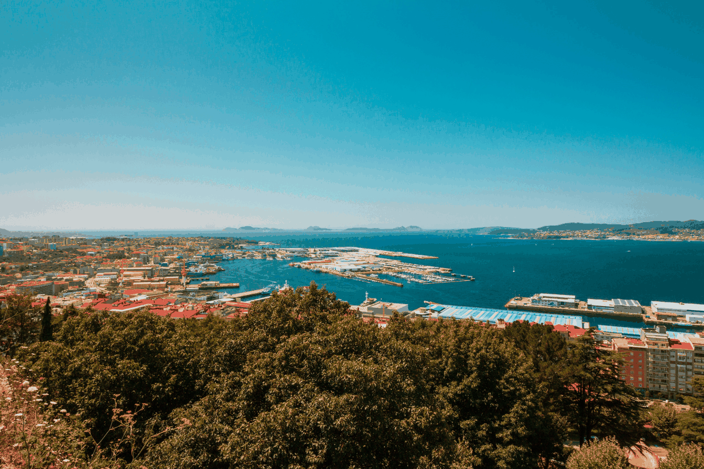
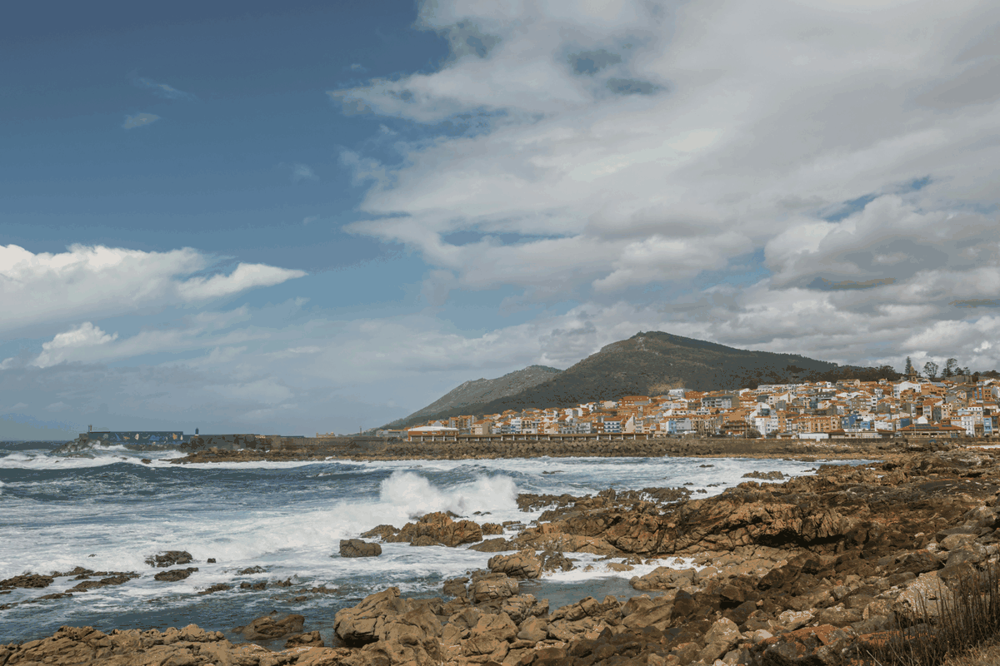

Vigo, affacciata sulla ría
Una città costruita intorno al mare. Il viaggio comincia tra il Casco Vello, il porto e i punti panoramici che si aprono sulla grande ría galiziana.
Vigo non è soltanto una tappa di passaggio: il suo carattere marinaro, la storia nascosta sotto la città moderna e il rapporto continuo con l'Atlantico meritano tempo.

Una Galizia che guarda l'Atlantico
Fuori dal centro, Vigo cambia rapidamente: quartieri marinari, costa frastagliata e piccoli angoli dove la città lascia spazio all'oceano.
Una chicca: Bouzas conserva ancora un'identità tutta sua, tra case, mare e passeggiate lontane dalla parte più urbana di Vigo.